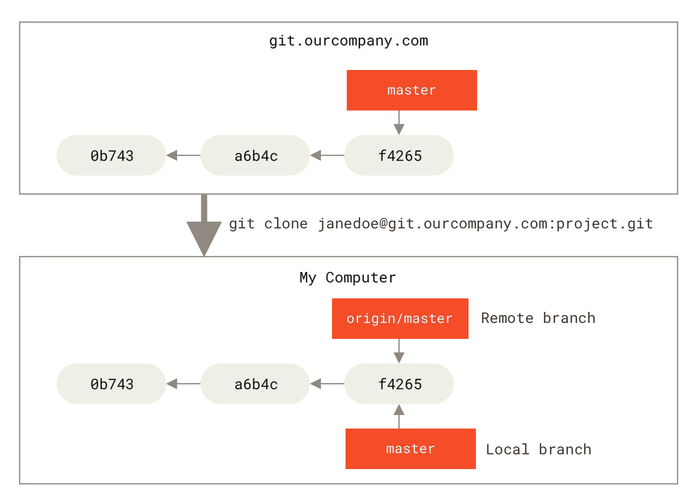
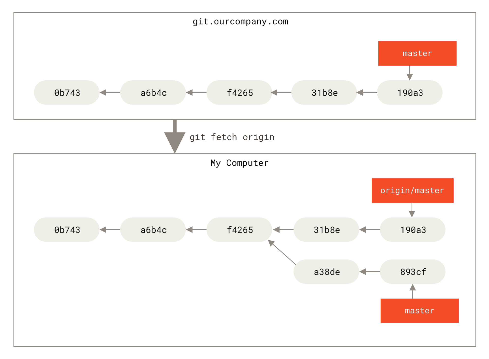
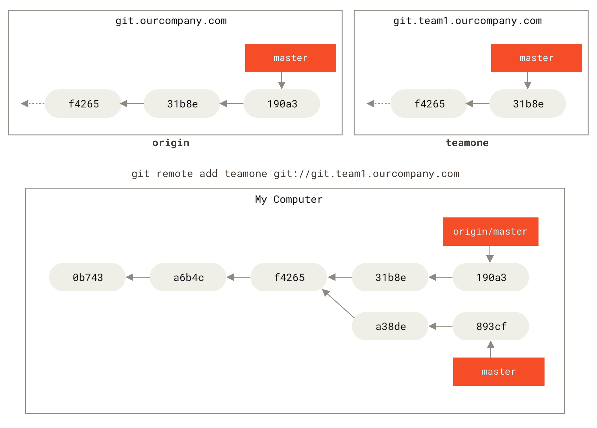
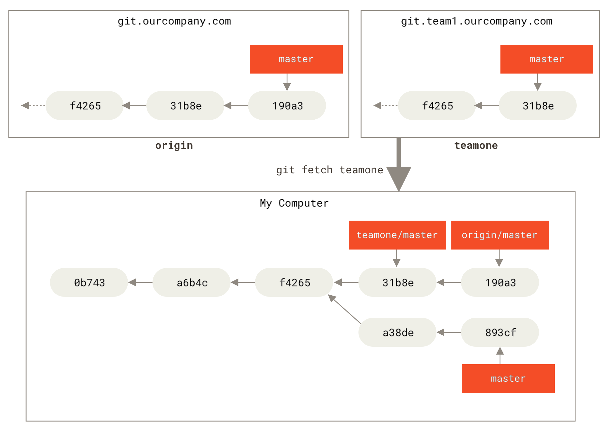

٣، ٥، الفروع البعيدة
الإشارات البعيدة هي تلك الإشارات الموجودة في مستودعاتك البعيدة، كالفروع والوسوم.
يمكنك سرد جميع الإشارات البعيدة بالأمر git ls-remote «البعيد»، أو سرد الفروع البعيدة ومعلوماتها بالأمر git remote show «البعيد» (حيث «البعيد» هو الاسم المختصر المستودع البعيد).
ولكن الشائع هو الانتفاع بـ«الفروع المتعقِّبة للبعيد».
الفرع المتعقِّب لبعيد هو إشارة إلى حالة فرع بعيد. أي أنه إشارة محلية (أي في المستودع الذي على حاسوبك) لكن لا يمكنك تحريكها؛ إن جت يحركها لك عند الاتصال مع الخادوم، حتى يضمن أنها دائما تمثل حالة المستودع البعيد. اعتبرها إشارات مرجعية مثل علامات المتصفح، لتذكرك أين كانت فروع مستودعك البعيد عندما تواصلت معه آخر مرة.
يكون شكل أسماء الفروع المتعقِّبة للبعيد <remote>/<branch> (أيْ اسم المستودع البعيد ثم شرطة مائلة ثم اسم الفرع).
فمثلا إذا أردت رؤية كيف بدا فرع master في مستودعك البعيد origin عندما اتصلت به آخر مرة، فانتقل إلى فرع origin/master.
وإذا كنت تعمل مع زميل على مسألةٍ ودفَعَ فرع iss53 إلى المستودع البعيد، فقد يكون لديك فرع محلي بالاسم نفسه، ولكن الفرع الذي على الخادوم سيمثله عندك الفرع المتعقِّب للبعيد الذي اسمه origin/iss53.
لعل الكلام غامض، فدعنا ننظر إلى مثال.
لنقُل إن لديك خادوم جت على شبكتك عنوانه git.ourcompany.com.
إذا استنسخته، فإن أمر الاستنساخ سيسميه origin لك، ويجذب كل ما فيه من بيانات، وينشئ إشارة إلى ما يشير إليه فرع master عليه ويسميه origin/master محليا.
وسيعطيك جت أيضا فرع master محلي خاص بك بادئًا من المكان نفسه الذي فيه فرع master الخاص بالأصل، حتى يتسنّى لك البدء بالعمل.
|
الاسم “origin” ليس مميزا
تماما مثلما أن اسم الفرع الرئيس “master” لا يحمل أي معنى خاص في جت، فكذلك اسم المستودع البعيد الأصل “origin”.
فإن “master” هو الاسم المبدئي لأول فرع ينشئه جت عندما تستخدم |

إذا عملت في فرعك الرئيس المحلي، ودفع أحد إلى الفرع الرئيس في المستودع البعيد، فإن تاريخَي الفرعين سيتقدمان مفترقين.
وإن تجنبت الاتصال مع مستودعك البعيد على الخادوم الأصل، فلن تتحرك إشارة origin/master التي لديك.

لمزامنة عملك مع مستودع بعيد، نفّذ الأمر git fetch «البعيد» (في حالتنا git fetch origin).
فهذا الأمر يبحث عن المستودع المسمى “origin” (في حالتنا git.ourcompany.com)، ويستحضر البيانات التي عليه وليست عندك بعد، ويحدّث قاعدة بياناتك المحلية، ويحرك إشارة origin/master الخاصة بك لتشير إلى موقعها الجديد المحدَّث.

git fetch فروعك المتعقِّبة للبعيدلتمثيل وجود خواديم بعيدة عديدة ولإيضاح منظر الفروع المتعقِّبة لهذه المستودعات البعيدة، لنقُل إن لديك خادوم جت داخلي آخر، ولا يستخدمه إلا فريق واحد من أجل التطوير،
وإن عنوانه هو git.team1.ourcompany.com.
يمكنك إضافته إشارةً بعيدة جديدة في مشروعك، بأمر git remote add كما رأينا في باب أسس جت،
وتسميته teamone، الذي يُعتبر اسمًا مختصرًا لرابطه الكامل.

والآن، نفّذ git fetch teamone لاستحضار كل ما لدى خادوم teamone البعيد وليس لديك بعد.
ولأنه الآن ليس لديه من البيانات إلا جزءًا مما لدى الخادوم الأصل (origin)، فلن يستحضر جت شيئًا، لكنه سيعدّ فرعًا متعقبًا للبعيد يسمى teamone/master ليشير إلى الإيداع الذي يشير إليه فرع master في مستودع teamone.

teamone/masterالدفع
عندما تريد أن تشارك فرعًا مع العالَم، فعليك دفعه إلى مستودع بعيد لديك إذن تحريره. ففروعك المحلية لا تُزامَن آليًّا إلى المستودعات البعيدة، حتى التي دفعت إليها؛ عليك دفع الفروع التي تريد مشاركتها بأمر صريح. يسمح لك هذا أن تستعمل فروعًا خصوصية للأعمال التي لا تريد مشاركتها، وألا تدفع إلا فروع الموضوعات التي تريد التعاون عليها.
مثلا إذا كان لديك فرعًا اسمه serverfix وتريد العمل عليه مع الآخرين، يمكنك دفعه بالطريقة نفسها التي دفعت بها فرعك الأول؛
نفّذ git push <remote> <branch> (أي اسم المستودع البعيد ثم الفرع):
$ git push origin serverfix
Counting objects: 24, done.
Delta compression using up to 8 threads.
Compressing objects: 100% (15/15), done.
Writing objects: 100% (24/24), 1.91 KiB | 0 bytes/s, done.
Total 24 (delta 2), reused 0 (delta 0)
To https://github.com/schacon/simplegit
* [new branch] serverfix -> serverfixهذا اختصار،
لأن جت يفك اسم الفرع serverfix إلى refs/heads/serverfix:refs/heads/serverfix، الذي يعني «ادفع فرعي المحلي serverfix إلى المستودع البعيد origin لتحدّث فرع serverfix عليه».
سنفصّل شرح جزء refs/heads/ في باب دواخل جت، ولكن عامةً يمكنك تركه.
كذلك يمكنك تنفيذ git push origin serverfix:serverfix الذي يفعل الشيء نفسه؛ إنه يقول: «خذ فرعي المسمى serverfix واجعله فرع serverfix في المستودع البعيد».
هذه الصياغة مفيدة لدفع فرع محلي إلى فرع بعيد باسم مختلف.
فمثلا إن لم تُرِده أن يسمى serverfix في المستودع البعيد، فنفّذ git push origin serverfix:awesomebranch، فهذا يدفع فرعك المحلي serverfix إلى فرع awesomebranch في المستودع البعيد.
|
لا تكتب كلمة مرورك كل مرة
إذا كنت تستعمل رابط HTTPS للدفع، فإن خادوم جت سيسألك عن اسم مستخدمك وكلمة مرورك للاستيثاق. المعتاد أن عميل جت سيسألك عن هذا في الطرفية حتى يعرف الخادوم إذا ما كان مسموحا لك بالدفع. إذا لم تشأ أن تكتب كلمة مرورك في كل مرة تدفع فيها، فعليك إعداد «تذكُّر مؤقت للاستيثاق» (“credential cache”).
أسهل خيار هو جعله في ذاكرة الحاسوب لعدة دقائق، الذي يمكنك إعداده بالأمر لمعلومات أكثر عن خيارات تذكُّر الاستيثاق المتاحة، انظر فصل |
وفي المرة التالية التي يستحضر أحد زملائك من الخادوم، سيحصل على إشارة إلى حيث يشير فرع serverfix على الخادوم؛ سيجدها عنده في الفرع البعيد origin/serverfix:
$ git fetch origin
remote: Counting objects: 7, done.
remote: Compressing objects: 100% (2/2), done.
remote: Total 3 (delta 0), reused 3 (delta 0)
Unpacking objects: 100% (3/3), done.
From https://github.com/schacon/simplegit
* [new branch] serverfix -> origin/serverfixمن المهم ملاحظة أنك عندما تستحضر، يجلب لك هذا فروعًا جديدة متعقبة للبعيد، أي أنك لا تحصل تلقائيًّا على نسخ محلية منها يمكنك تعديلها.
بلفظ آخر، لا تحصل آليًّا على فرع serverfix جديد في هذه الحالة: لم تُعطَ إلا إشارة origin/serverfix التي لا يمكنك التعديل فيها.
لدمج هذا العمل في فرعك الحالي، يمكنك تنفيذ git merge origin/serverfix.
وإذا أردت فرع serverfix خاصًا بك تستطيع العمل فيه، يمكنك تفريعه من الفرع المتعقب للبعيد:
$ git checkout -b serverfix origin/serverfix
Branch serverfix set up to track remote branch serverfix from origin.
Switched to a new branch 'serverfix'يعطيك هذا فرعًا محليًا يمكنك العمل فيه، ويبدأ من حيث يقف origin/serverfix.
تعقب الفروع
إن سحب فرع محلي من فرع متعقب للبعيد ينشئ آليًّا ما يسمى «فرع متعقِّب» (والفرع الذي يتعقبه يسمى «الفرع المنبع»).
الفروع المتعقبة هي فروع محلية ذات علاقة مباشرة بفرع بعيد.
فإذا كنت في فرع متعقب وكتبت git pull، فسيعرف جت تلقائيا أي مستودع بعيد يستحضر منه وأي فرع يدمج فيه.
عندما تستنسخ مستودعًا، ينشئ جت فرعًا باسم الفرع المبدئي فيه (مثل master) ويجعله يتعقب الفرع المبدئي في المستودع الأصل (origin/master).
ولكن يمكنك إعداد فروع متعقبة أخرى إذا أردت، لتعقب مستودعات بعيدة أخرى، أو لتعقب فرع غير الرئيس.
أيسر حالة مثلما رأيتَ آنفًا، عند اتحاد اسم الفرع المحلي والبعيد، أيْ git checkout -b <branch> <remote>/<branch>.
وهذه العملية شائعة بما يكفي أن جت يتيح اختصارها بالخيار --track:
$ git checkout --track origin/serverfix
Branch serverfix set up to track remote branch serverfix from origin.
Switched to a new branch 'serverfix'وفي الحقيقة أن هذا شائع جدًا حتى إن جت يتيح اختصارًا لهذا الاختصار. فإذا كان اسم الفرع الذي تريد سحبه، أولا غير موجود محليًّا بالفعل، وثانيا يطابق تمامًا اسمًا في مستودع بعيد واحد، فسينشئ لك جت فرعًا متعقِّبًا:
$ git checkout serverfix
Branch serverfix set up to track remote branch serverfix from origin.
Switched to a new branch 'serverfix'ولإعداد فرع محلي باسم مختلف عن الفرع البعيد، فسهلٌ استعمال الصيغة الأولى مع اسم فرع محلي مختلف:
$ git checkout -b sf origin/serverfix
Branch sf set up to track remote branch serverfix from origin.
Switched to a new branch 'sf'الآن، فرعك المحلي sf سيجذب من origin/serverfix تلقائيا.
إن كان لديك بالفعل فرعًا محليًّا وتريده أن يجذب من فرع بعيد جذبته للتو، أو تريد تغيير الفرع المنبع الذي تتعقبه، عليك بخيار «تعيين المنبع» --set-upstream-to أو اختصاره -u، مع أمر الفروع git branch لتغييره بأمر صريح وقتما شئت.
$ git branch -u origin/serverfix
Branch serverfix set up to track remote branch serverfix from origin.|
الاسم المختصر للمنبع
عندما يكون لديك فرع متعقب مُعَدّ، يمكنك الإشارة إلى فرعه المنبع بالاختصار |
لرؤية الفروع المتعقِّبة التي أعددتها، يقبل أمر الفروع خيارَ الإطناب مرتين -vv
ليسرد لك فروعك المحلية مع معلومات مزيدة فيها ما يتعقبه كل فرع وإذا كان فرعك متقدمًا عنه (ahead) أو متأخرًا (behind) أو كليهما.
$ git branch -vv
iss53 7e424c3 [origin/iss53: ahead 2] Add forgotten brackets
master 1ae2a45 [origin/master] Deploy index fix
* serverfix f8674d9 [teamone/server-fix-good: ahead 3, behind 1] This should do it
testing 5ea463a Try something newفنرى هنا أن فرع iss53 يتعقب origin/iss53 وأنه «متقدم» (ahead) باثنين، أي أن لدينا إيداعين محليين ولم ندفعهما إلى الخادوم بعد.
ونرى كذلك أن فرع master يتعقب origin/master وأنه متزامن معه.
ثم نرى بعدهما أن فرع serverfix يتعقب فرع server-fix-good على خادوم teamone وأنه متقدم عنه بثلاثة ومتأخر بواحد، أي أن لدى الخادوم إيداعًا لم ندمجه في فرعنا بعد، وأن لدينا ثلاثة إيداعات محلية لم ندفعها إليه.
ثم نرى في النهاية أن فرع testing لا يتعقب أي فرع بعيد.
مهم ملاحظة أن هذه الأعداد ليست إلا منذ آخر استحضار (fetch) من كل خادوم نتعقبه.
فلا يحاول هذا الأمر الاتصال بالخواديم؛ إنما يخبرك بما يحفظه على حاسوبك عما فيها.
فإذا أردت من أعداد التقدم والتأخر أن تكون أحدث ما يكون، فعليك الاستحضار من جميع خواديمك البعيدة قبل تنفيذ هذا الأمر مباشرةً.
ويمكنك فعل ذلك هكذا:
$ git fetch --all; git branch -vvالجذب
نعلم أن أمر الاستحضار git fetch يستحضر الإيداعات التي في المستودع البعيد وليست لديك، لكنه لا يغيّر شيئًا في مجلد عملك قَط؛
إنما يجلب البيانات لك ويتركك تدمجها بنفسك.
لكن في جت أمر يسمى أمر الجذب git pull، وهذا الأمر عمليًّا يكافئ استحضارًا git fetch متبوعًا مباشرةً بدمج git merge، في معظم الحالات.
فإذا كان لديك فرع متعقِّب مُعَدّ كما في الفصل السابق، إما بإعداده صراحةً وإما بأن يعدّه لك أمر الاستنساخ git clone أو أمر السحب git checkout، فإن أمر الجذب git pull سينظر أيّ مستودع وأيّ فرع يتعقبهما فرعك الحالي، ويستحضر ما في المستودع البعيد ويحاول دمجه في فرعك.
حذف فروع بعيدة
لنقُل إنك قضيت ما تريد من فرع بعيد، مثلا انتهيت أنت وزملاؤك من إضافة ميزة جديدة ودمجتموها في الفرع الرئيس.
يمكنك حذف فرع بعيد بالخيار --delete مع أمر الدفع git push.
فإذا أردت حذف فرع serverfix من الخادوم، يمكنك تنفيذ الأمر التالي:
$ git push origin --delete serverfix
To https://github.com/schacon/simplegit
- [deleted] serverfixلا يفعل هذا الأمر سوى أنه يحذف الإشارة من على الخادوم. ولكن خواديم جت عمومًا تبقى البيانات موجودة وقتًا، إلى أن يعمل جامع المهملات، فغالبًا ستستطيع استعادته بسهولة إن حذفته بالخطأ.